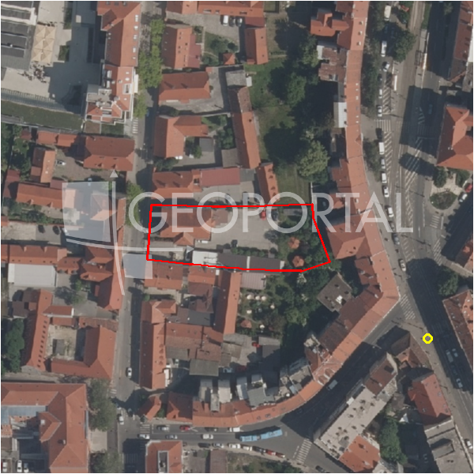

#6044 · Prodaja,Markuševec,građevinsko stambeno zemljište s projektom
Markuševec, Podsljeme, Grad Zagreb · zemljiste · njuskalo · status active · oglas ↗
Ocjena
- Score
- 57 rule 57 · LLM – · 12.09.2026.
- RLV
- 236.000 € (127 €/m²) · ratio 1,07
- Ukupna investicija
- 1,81 M€
- GBP
- 772 m²
- Feedback
- –
- CRM
- –
Oglas
- Cijena
- 220.000 € (99 €/m²)
- Površina
- 2.222 m² · DKP 1.862 m² (odstupanje -16,2 %)
- Prodavatelj
- agencija · Biliškov nekretnine d.o.o.
- Prvi put
- 11.09.2026. · zadnje 11.09.2026. · 0 d na tržištu
Povijest cijene
| Datum | Cijena |
|---|---|
| 11.09.2026. | 220.000 € |
Flagovi
zgrade_bez_rusenja zgrade na čestici bez spomena rušenja (−10)zone_uncertainty zona nije pregledana (reviewed: false) (−5)
gbp_iz_oglasa GBP preuzet iz oglasa (gbp_claim)
llm_pending LLM ekstrakcija/ocjena nedostupna
Komponente score-a
| rlv | {'gbp': 772.0, 'kis': 1.5, 'nkp': 633.04, 'noi': None, 'rlv': 236301.1443478264, 'ratio': 1.0740961106719382, 'value': None, 'phases': 1, 'profile': 'zagreb_visestambeno', 'gdv_neto': 2177657.6, 'cost_soft': 50952.0, 'gdv_bruto': 2722072.0, 'kis_known': True, 'total_inv': 1808852.0, 'cost_build': 1273800.0, 'cost_other': 250900.0, 'cost_sales': 81662.16, 'demolition': False, 'gbp_source': 'min(kis,gbp_claim)', 'rlv_per_m2': 126.91807263128217, 'parcel_area': 1861.84, 'parcelation': False, 'roi_on_cost': 0.1587434682328903, 'profit_at_ask': 287143.44000000006, 'cost_demolition': 0.0, 'total_inv_phase': 1808852.0, 'parcel_area_effective': 1861.84, 'sale_price_per_m2_nkp': 4300.0} |
| hard | [] |
| info | ['gbp_iz_oglasa', 'llm_pending'] |
| rubric | {'permits': {'max': 10.0, 'detail': {'permit': 'gradjevinska'}, 'points': 10.0}, 'physical': {'max': 10.0, 'detail': {'slope_pct': 4.59, 'road_access': 'yes', 'slope_points': 4.0}, 'points': 7.0}, 'liquidity': {'max': 10.0, 'detail': {'n_cuts': 0, 'points_cut': 0.0, 'points_days': 0.03333333333333333, 'seller_type': 'agencija', 'points_fresh': 1.0, 'price_cut_pct': None, 'days_on_market': 1, 'points_private': 0}, 'points': 1.03}, 'rlv_ratio': {'max': 40.0, 'detail': {'rlv': 236301, 'ratio': 1.074, 'asking_price': 220000.0}, 'points': 27.22}, 'zone_quality': {'max': 15.0, 'detail': {'no_upu': True, 'source': 'gis', 'zone_class': 'mjesovito_pretezito_stambeno', 'zone_ideal': True, 'gp_uredjeni': True}, 'points': 12.0}, 'price_vs_benchmark': {'max': 15.0, 'detail': {'source': 'auto:Podsljeme', 'deviation': 0.381, 'ask_eur_m2': 99, 'benchmark_eur_m2': 160.0}, 'points': 14.72}} |
| weights | {'llm': 0.4, 'rule': 0.6, 'model': 0.0} |
| penalties | {'zone_uncertainty': 5, 'zgrade_bez_rusenja': 10} |
| raw_score | 72,0 |
| rlv_notes | [] |
| flag_notes | {'max_gbp': 2793, 'total_inv': 1808852, 'zone_code': 'M1', 'zone_class': 'mjesovito_pretezito_stambeno', 'zone_source': 'gis', 'zone_reviewed': False, 'commercial_pct': 0.0, 'buildings_share': 0.441, 'commercial_source': 'zone_rule'} |
| caps_applied | [] |
GIS
- Čestica
- k.o. 335240, k.č. 572 (pin_buffer, 0,77); k.o. 335240, k.č. 1769 (pin_buffer, 0,69); k.o. 335240, k.č. 583 (pin_buffer, 0,68)
- Zona
- M1 (mjesovito_pretezito_stambeno) · NIJE pregledana
- kig / kis / katnost
- 0,40 / 1,50 / Po+P+3+Pk
- GP / UPU
- uredjeni · UPU ne
- Pristup / nagib
- yes · 4,6 % (max 9,7 %)
- More
- –
- Zaštite
- Natura ne · zaštićeno ne · kulturno dobro ne
- Zgrade na čestici
- 44 %
- Match
- 0,77
Karta
Ortofoto (DOF)

RLV kalkulacija — pretpostavke
| gbp | {'value': 772.0, 'source': 'min(kis,gbp_claim)'} |
| kis | {'value': 1.5, 'source': 'gis'} |
| soft_pct | {'value': 0.04, 'source': 'profil'} |
| nkp_ratio | {'value': 0.82, 'source': 'profil'} |
| cost_other | {'value': 250900.0, 'source': 'profil: doprinosi+uređenje po m² GBP, financiranje+rezerva % gradnje'} |
| parcel_area | {'value': 1861.84, 'source': 'dkp'} |
| asking_price | {'value': 220000.0, 'source': 'oglas'} |
| margin_on_cost | {'value': 0.15, 'source': 'profil'} |
| build_cost_per_m2_gbp | {'value': 1650.0, 'source': 'profil'} |
| sale_price_per_m2_nkp | {'value': 4300.0, 'source': 'benchmark:seed:Podsljeme'} |
| transfer_tax_and_acquisition | {'value': 0.06, 'source': 'profil'} |
Ekstrakcija iz oglasa
| permit | gradjevinska |
| gbp_claim | 772.0 |
| permit_content | prometnicu |
| existing_building_m2 | 1334.0 |
Opis oglasa
www.biliskov.com – ID 15899 Markuševec, Zagreb Investicijski projekt – dvije stambene vile s pravomoćnim lokacijskim dozvolama, ukupne bruto površine cca 772 m2, na parcelama ukupne površine cca 2.222 m2. Na atraktivnoj i mirnoj lokaciji u Markuševcu, svega 15 minuta vožnje od centra Zagreba, nalazi se projekt izgradnje dvije moderne stambene vile, idealan za investitore koji traže gotov i razrađen projekt s jasnim razvojnim potencijalom. Projekt uključuje: Kuća 1 građevinska bruto površina: cca 386 m2 koncipirana kao objekt s 2 stana smještena na parcelama ukupne površine 1.334 m2 Kuća 2 građevinska bruto površina: cca 386 m2 koncipirana kao objekt s 3 stana parcela površine 888 m2 Status projekta ishođene pravomoćne lokacijske dozvole za obje kuće provedena parcelacija osigurana i izdvojena parcela za pristupnu prometnicu ishođena građevinska dozvola za prometnicu parcela prometnice donirana Gradu Zagrebu Dodatna pripremljena dokumentacija ponude za izradu projektne dokumentacije za građevinsku dozvolu: Kuća 1: 16.825 € Kuća 2: 17.625 € troškovnik izgradnje pristupne prometnice: 134.774,50 € (s PDV-om) Investicijski potencijal projekt spreman za fazu ishođenja građevinske dozvole i gradnje mogućnost razvoja 2 luksuzne vile / ukupno 5 stambenih jedinica mirna i tražena rezidencijalna lokacija u Zagrebu idealno za prodaju stanova ili luxury najam Cijena 200 €/m2 + PDV (zemljište s projektom) Cijena zemljišta : 220.000,00€+pdv